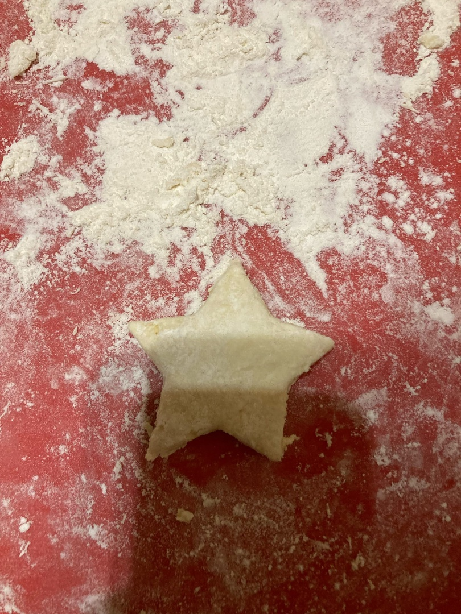

🍪 Имбирное печенье (постное) 🍪
31 декабря 2022 12:00
Оценка:
5.0
Это Пряня. Он был создан пекарем Кексом и учился в Академии печенья на факультете домоводства.
Пряная выпечка является неотъемлемым атрибутом рождественского и новогоднего стола 🎅🏻 во многих странах мира. Новый год у православных христиан попадает на рождественский пост, но почему бы не порадовать себя и своих близких постным лакомством? Печенье из самых простых продуктов, которые всегда под рукой. А если есть желание, то его можно расписать глазурью.
Вот, что нам понадобится:
- Вода - 150 мл
- Растительное масло - 7 ст. ложек
- Мед - 3 ст. ложки
- Пшеничная мука - 470 г
- Тертый имбирь - 10 г
- Корица - 5 г
- Молотая гвощдика - 1 ч. ложка
- Сахар - 10 г
- Ванилин - 3 г
Итак, приступим!
- Взбиваем в блендере до однородной консистенции: масло, воду, мёд, сахар, тёртый имбирь, соль, соду, ванилин и специи.
- Переливаем смесь в глубокую чашу и постепенно добавляем муку. Вымешиваем эластичное тесто, которое не липнет к рукам.
- Раскатываем тесто толщиной 0,5 см, вырезаем формочками печенье.
- Застилаем противень пекарной бумагой, выпекаем 12-15 минут при температуре 180 градусов.
Приятного чаепития!


Оцени рецепт: